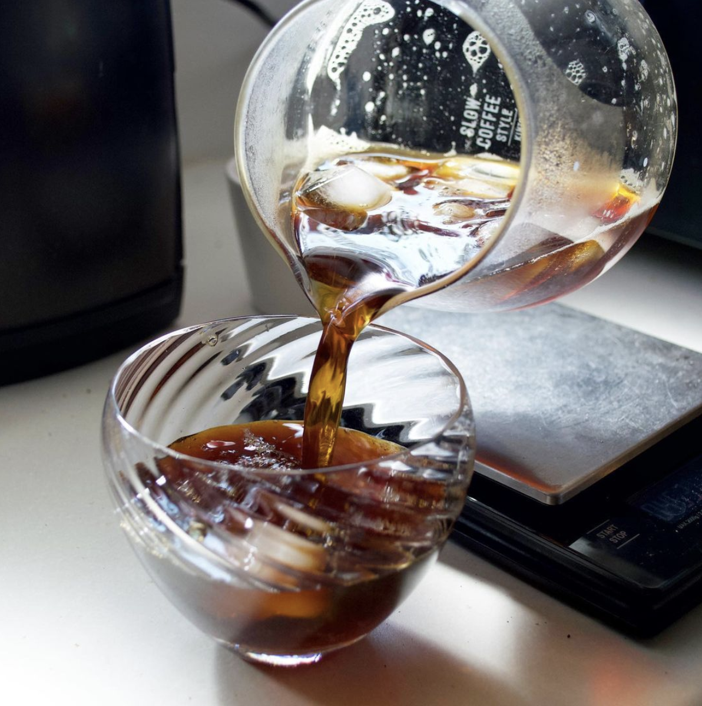

地産地消・国産素材で
丁寧に作るおやつ屋さん
ご注文は
こちら
通販のお知らせ
2021.8.1更新
おやつ箱の情報を公開しました！
おやつギャラリー
もっと見る
お店の紹介
hanacafeのネットショップにご来店頂きありがとうございます。
当店ではかしこまって食べるような特別の日のケーキではなく、朝・昼・夜、いつでもふと食べたくなる“おやつ”と、オリジナルブレンドのコーヒー豆の販売を行っています。
油脂や砂糖は可能な限り量を抑えつつも、味がぼんやりとしないよう、ひとつひとつの素材を吟味し、素材の美味しさが活きるおやつ作りを心がけています。例えば、卵は自然豊かな長野県の大地で平飼いされた鶏の新鮮な卵「大地の卵」を全商品に使用。 臭みが全くなく、コクや旨みやスッキリとした後味があり、たまご感が主張しすぎず素材の味を引き立ててくれます。
お砂糖も白砂糖ではなく、きび糖や、少量でコクと甘みが出る三温糖をメインに使用しています。 その他原材料も可能な限り国産のもの、地元・神奈川県産のもの、人工的な添加物不使用の素材のものを使用しています。 そしてエシカル消費を軸に置き、環境・自然・人に配慮した生産者様を応援すべく、できるだけその時々に出会った生産者様のお野菜や果物を使ったおやつをお届けします。不定期で、コーヒー豆で起こした自家製天然酵母のおやつパンの販売も。
コーヒー豆は地元にある【405 COFFEE ROASTERS】とコラボレーションしたオリジナルブレンドです。おやつとの相性を重視したブレンドは中深煎り。コクと苦味のバランスがよく、後味はすっきりとしています。おやつとご一緒に、リフレッシュしたい時の一杯に…。
